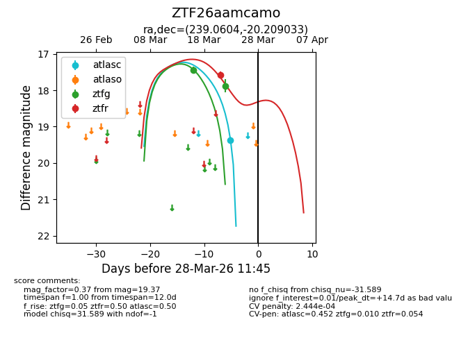
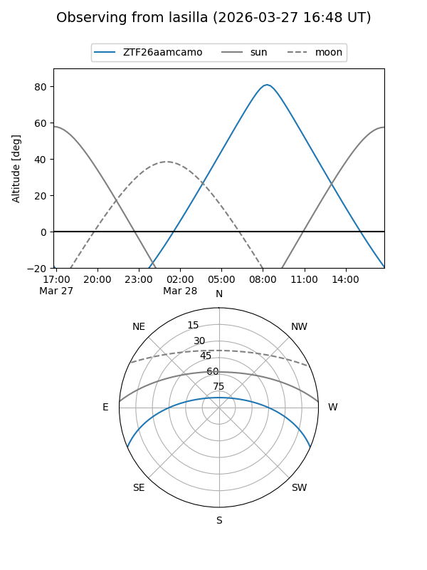
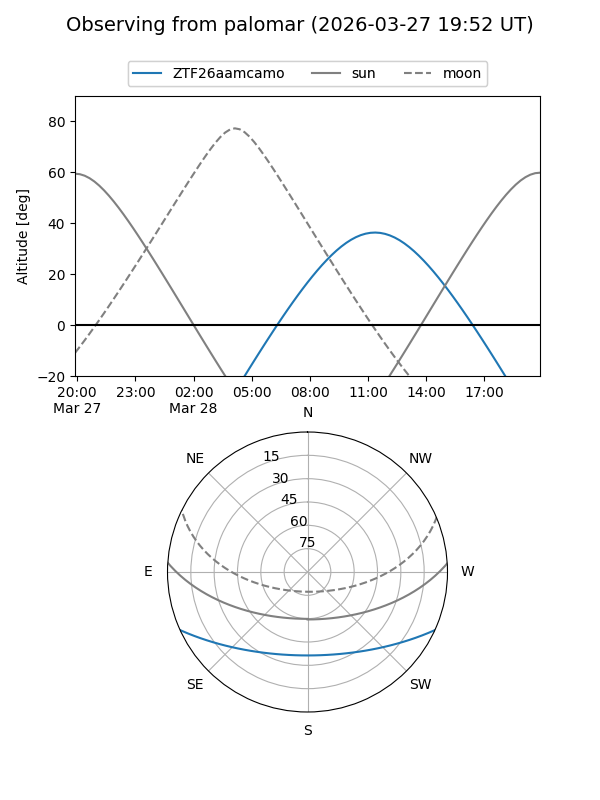
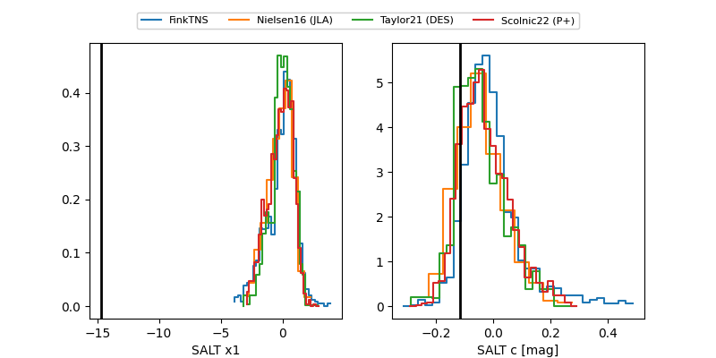

ZTF26aamcamo
Target ZTF26aamcamo at 2026-03-28 11:48
Aliases and brokers:
FINK: link
Lasair: link
ALeRCE: link
alt names
ZTF26aamcamo (ztf,fink_ztf)
Coordinates:
equatorial (ra, dec) = 239.0604,-20.20903
equatorial (HMS+DMS) = 15:56:14.50,-20:12:32.52
galactic (l, b) = (351.2259,+24.86931)
Flags:
likely cv
Photometry:
last atlasc=19.37, ztfg=17.88, ztfr=17.57
1 atlasc, 2 ztfg, 1 ztfr detections
Lightcurve

Visibility


Additional plots
